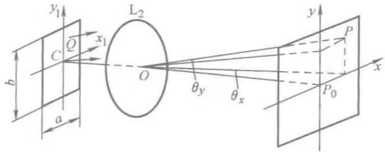
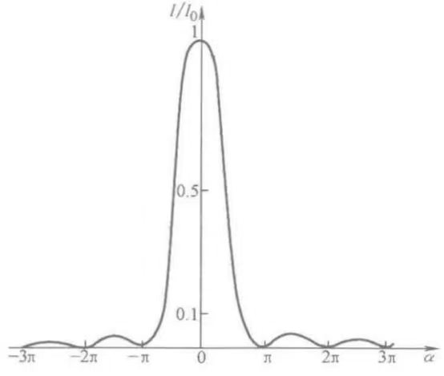

选取矩孔中心C为坐标原点.
观察平面上P点的复振幅为：
$$\tilde{E} = C'ab\frac{\sin\frac{kla}{2}\sin\frac{k\omega b}{2}}{\frac{kla}{2}\frac{k\omega b}{2}}\exp\left[ik\left(\frac{x^2 + y^2}{2f}\right)\right]$$这个需要从基尔霍夫公式推，先略过.
对于光轴上的P0\((0,0)\)点，复振幅为：
对于任一点P\((x,y)\)，有：
$$\tilde{E} = \tilde{E}_0\left(\frac{\sin\frac{kla}{2}}{\frac{kla}{2}}\right)\left(\frac{\sin\frac{k\omega b}{2}}{\frac{k\omega b}{2}}\right)\exp\left[ik\left(\frac{x^2 + y^2}{2f}\right)\right]$$[令]
$$\alpha = \frac{kla}{2} = \frac{\pi}{\lambda}a\sin\theta_x$$ $$\beta = \frac{k\omega b}{2} = \frac{\pi}{\lambda}b\sin\theta_y$$则P点光强为：
$$I = I_0\left(\frac{\sin\alpha}{\alpha}\right)^2\left(\frac{\sin\beta}{\beta}\right)^2$$ $$\begin{align} I &= |\tilde{E}|^2\\ &= |\tilde{E}_0|^2\left(\frac{\sin\alpha}{\alpha}\right)^2\left(\frac{\sin\beta}{\beta}\right)^2\\ &= I_0\left(\frac{\sin\alpha}{\alpha}\right)^2\left(\frac{\sin\beta}{\beta}\right)^2 \end{align}$$讨论\(I\)沿\(x\)轴的分布，有：
$$\omega = y = 0$$ $$\therefore I = I_0\left(\frac{\sin\alpha}{\alpha}\right)^2$$强度分布曲线如图所示：

\(I_0\)在\(\alpha = 0\)（\(P_0\)点处）有主极大值\(I_0 = I\).
在\(\alpha = m\pi,~m \in \mathbb{Z}\)处有极小值\(I_0 = 0\).
相邻零强度点间存在一个次极大，位置由下式决定：
次极大位置即\(I'(\alpha) = 0,~(\alpha\neq m\pi,~m\in\mathbb{Z})\)处
$$\begin{align} I'(\alpha) &= \left[I_0\left(\frac{\sin\alpha}{\alpha}\right)^2\right]'\\ &= I_0\cdot2\left(\frac{\sin\alpha}{\alpha}\right)\left(\frac{\alpha\cos\alpha - \sin\alpha}{\alpha^2}\right)\\ &= 0 \end{align}$$ $$\because I_0\neq 0,\quad \alpha\neq m\pi,~m\in\mathbb{Z}$$ $$\therefore\alpha\cos\alpha - \sin\alpha = 0$$\(\alpha = n\frac{\pi}{2},~n\in\mathbb{Z}\)时：
$$\alpha\cos\alpha - \sin\alpha = \pm 1 \neq 0$$ $$\therefore \tan\alpha = \alpha$$